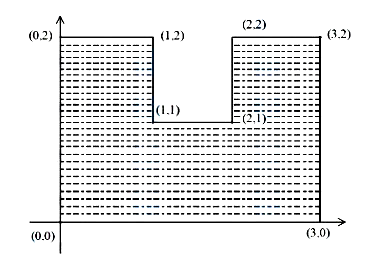

Waves: Standing Waves in Strings & Organ Pipes
27
JEE Main 2021 (Online) 16 Mar Evening Shift
Numerical Answer +4 0
A closed organ pipe of length and an open organ pipe contain gases of densities and respectively. The L ρ1 ρ2 compressibility of gases are equal in both the pipes. Both the pipes are vibrating in their first overtone with same frequency. The length of the open pipe is x L√ρ1 , where x is _______. 3 ρ2 (Round off to the Nearest Integer)
Correct Answer: 4
Source: JEE Main Official Answer Key
25
JEE Main 2021 (Online) 26 Aug Morning Shift
Numerical Answer +4 0
Two travelling waves produces a standing wave represented by equation. y = (1. 0 mm) cos[(1. 57 cm−1)x] sin[(78. 5 s−1) t] . The node closest to the origin in the region x > 0 will be at x =. . . . . . (in cm).
Correct Answer: 1
Source: JEE Main Official Answer Key
25
JEE Main 2021 (Online) 27 Aug Evening Shift
Numerical Answer +4 0
A tuning fork is vibrating at 250 Hz . The length of the shortest closed organ pipe that will resonate with the tuning fork will be _____ cm . (Take speed of sound in air as 340 m s−1 )
Correct Answer: 34
Source: JEE Main Official Answer Key
26
JEE Main 2022 (Online) 25 Jun Morning Shift
Numerical Answer +4 0
The first overtone frequency of an open organ pipe is equal to the fundamental frequency of a closed organ pipe. If the length of the closed organ pipe is 20 cm. The length of the open organ pipe is _____ cm

Correct Answer: 80
Source: JEE Main Official Answer Key
23
JEE Main 2022 (Online) 29 Jun Evening Shift
Numerical Answer +4 0
In an experiment to determine the velocity of sound in air at room temperature using a resonance tube, the first resonance is observed when the air column has a length of 20. 0 cm for a tuning fork of frequency 400 Hz is used. The velocity of the sound at room temperature is 336 m s−1 . The third resonance is observed when the air column has a length of _____ cm

Correct Answer: 104
Source: JEE Main Official Answer Key
14
JEE Main 2023 (Online) 08 Apr Evening Shift
MCQ (Single Correct Answer) +4 -1
A guitar string of length 90 cm vibrates with a fundamental frequency of 120 Hz . The length of the string producing a fundamental of 180 Hz will be _____ cm
Correct Answer: D
Source: JEE Main Official Answer Key
14
JEE Main 2023 (Online) 11 Apr Evening Shift
MCQ (Single Correct Answer) +4 -1
A wire of density 103 m−3 is stretched between two clamps apart. The extension developed in 8 × kg 0. 5 m the wire is 3. 2 × 10−4 m . If Y = 8 × 1010 N m−2 , the fundamental frequency of vibration in the wire will be _____ Hz
Correct Answer: C
Source: JEE Main Official Answer Key
24
JEE Main 2023 (Online) 13 Apr Evening Shift
Numerical Answer +4 0
In an experiment with sonometer when a mass of 180 g is attached to the string, it vibrates with fundamental frequency of 30 Hz. When a mass 𝑚 is attached, the string vibrates with fundamental frequency of 50 Hz. The value of 𝑚 is ______ g.
Correct Answer: 500
Source: JEE Main Official Answer Key
24
JEE Main 2024 (Online) 05 Apr Evening Shift
Numerical Answer +4 0
A sonometer wire of resonating length 90 cm has a fundamental frequency of 400 Hz when kept under some tension. The resonating length of the wire with fundamental frequency of 600 Hz under same tension _____ cm .
Correct Answer: 60
Source: JEE Main Official Answer Key
24
JEE Main 2024 (Online) 06 Apr Evening Shift
Numerical Answer +4 0
Two open organ pipes of lengths 60 cm and 90 cm resonate at 6th and 5th harmonics respectively. The difference of frequencies for the given modes is _______ Hz . (Velocity of sound in air = 333 m/s )
Correct Answer: 740
Source: JEE Main Official Answer Key
24
JEE Main 2024 (Online) 08 Apr Morning Shift
Numerical Answer +4 0
A closed and an open organ pipe have same lengths. If the ratio of frequencies of their seventh overtones is ( a−1 ) then the value of a is ________ a →

Correct Answer: 16
Source: JEE Main Official Answer Key
23
JEE Main 2024 (Online) 27 Jan Evening Shift
Numerical Answer +4 0
The reading of pressure metre attached with a closed pipe is 104 m-2. On opening the valve, water 4 . 5 × N starts flowing and the reading of pressure metre falls to 2 . 0 × 104 N m-2. The velocity of water is found to be √𝑉 m s-1. The value of 𝑉 is _________.
Correct Answer: 50
Source: JEE Main Official Answer Key
24
JEE Main 2024 (Online) 30 Jan Morning Shift
Numerical Answer +4 0
In a closed organ pipe, the frequency of fundamental note is 30 Hz . A certain amount of water is now poured in the organ pipe so that the fundamental frequency is increased to 110 Hz . If the organ pipe has a cross- sectional area of 2 cm2 , the amount of water poured in the organ tube is ________ g . (Take speed of sound in air is 330 m s−1 )
Correct Answer: 400
Source: JEE Main Official Answer Key
12
JEE Main 2024 (Online) 31 Jan Morning Shift
MCQ (Single Correct Answer) +4 -1
The fundamental frequency of a closed organ pipe is equal to the first overtone frequency of an open organ pipe. If length of the open pipe is 60 cm, the length of the closed pipe will be :
Correct Answer: D
Source: JEE Main Official Answer Key